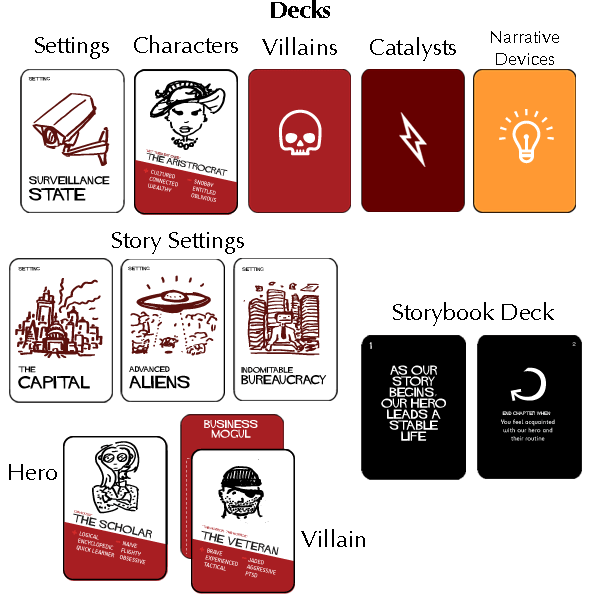
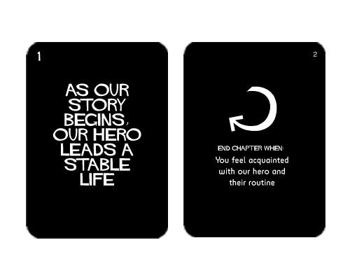
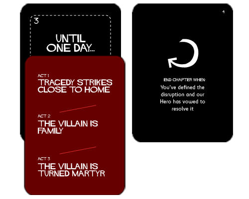

Plotypus Game Manual
Players: 2-5; Duration: 15 - 60 minutes
Stranded on a Saturnian Moon
The year is 2378 - you and your crewmates are 'guests' of His Excellency: Kyashlar, Sultan of Titan. He has been keeping you prisoner since your ship crashed near the palace, several kilo-hours ago. At first, his Vizier suspected you were Ganymede spies but you assuaged his fears after 'consenting' to brain probes. Still, you languish in the guest rooms with no indication that you'll ever be allowed to leave the palace.
One day, you overhear two guards discussing the upcoming Saturnalia. As per Titan tradition, the second night of festivities includes a storytelling tournament with Sultan Kyashlar, wisest among men, as judge. The Sultan, beneficent as he is wise, will grant one wish to whomever weaves the best tale.
You and your crewmates believe winning the tournament is your only chance for freedom. Luckily, you have a copy of Plotypus™ to aid in crafting the most magnificent story of all time. Can you win the Sultan's approval and thus a return trip to your mother corporation? Good luck!
Oh right, minor point, if the Sultan dislikes your story he will throw you to the nanobots and have you spun into carbon nanotubes. So, no pressure...
Overview
Thank you for buying / printing / stealing this game! Plotypus is a collaborative storytelling game; it enables any group to tell an epic story with a riveting plot.
During the Context Phase you will establish the story's setting, hero, and villain. Then, in the Story Phase, you will tell the tale while proceeding through the Storybook Deck; players will concisely describe scenes that advance the plot and occasionally draw cards that influence the narrative.
At a high level, the story arc is:
Act One: Hero leads a stable life -> an incident disrupts that life and the Hero vows to resolve it
Act Two: Hero prepares to resolve disruption -> almost succeeds -> the stakes are raised
Act Three: Hero regroups -> then confronts villain -> and succeeds, but at a cost
The goal of the game is have fun while weaving an excellent story. You should modify or ignore any rule in favor of telling a better story or having more fun.
The Components
This game contains seven sets of cards:
Settings: these describe the locations and social context in which your story unfolds
Characters: these are broad archetypes used for the Hero, Villain, and any other characters
Villains: one of these cards will be your story's Villain
Storybook: these 12 ordered cards that guide you through the arc of the story
Catalysts: these cards are used to escalate the plot, once during each Act of the story
Narrative Devices: these cards are narritive suggestions that spice up the tale
Narrator: these cards contain a summary of what each player should do on their turn
Additonally, the game includes a few 'Narrator' cards which contain an overivew of what do on each players turn. There is also a 'Director' card which contains tips for leading a successful Plotypus game. You, as game owner, should probably be the Director on the first few plays.
The Context Phase
Before starting, separate the decks and ensure the Story Book deck is sorted - there are page numbers at the top of the cards.
Start the game by selecting three cards from the Settings deck. We suggest having each player draw a couple cards and then, as a group, deciding which three make the most compelling setting.
Next, draw a card from the Villains deck and then choose a card from the Characters deck to accompany it. Spend a minute discussing the villain's backstory and ambitions.
Finally, draw a card for your Hero from the Characters deck. No need to flesh out your Hero yet - that is the first part of the Story Phase.
We recommend laying out the cards and decks like this:
The Story Phase
This phase is the core of the game. You will go around narrating the Hero's epic as it escalates through the classic points of a plot. We've organized the pivotal moments into Chapters
The Storybook
Your guide is the Storybook - the deck with the Plotypus cover and black Chapter cards. it contains the topic for each Chapter and criteria for moving to the next chapter. The topic is always on the left card and the criteria is always on the right.
During each chapter, players rotate as narrator and advance the story by a few sentances. You can spend as much or as little time on each chapter as you like. A given chapter might take two minutes in one session but ten minutes in another; each player might have one turn, several, or an entire chapter might be quickly narrated by just one player.
In the above Chapter, you would describe short scenes of the Hero in their normal life. You might bring up the Hero's relationships with friends and family, occupation, hobbies, hopes, dreams, etc. One you have a good sense of the Hero's place in the world, you would flip to the next Chapter.
Catalysts
Each Act includes a Chapter that instructs you to draw a Catalyst card. We recommend you draw two and pick the more interesting one. Catalyst cards have three different escalations, corresponding to the different Acts - only read the one corresponding to your Act.
Place the Catalyst card on top of the Chapter card and then read the line for your Act. Spend this Chapter describing the scenes which involve the Catalyst.
The above example is in Act 1. Only pay attention to the Act 1 prompt: Tragedy Strikes Close To Home. Players would spend this Chapter describing the tragedy and having the Hero commit to adventure.
Acts
The game is split into three Acts. Each act should feel distinct; you might make a change in location, motivation, or pacing.
You have specific instructions at the beginning of each Act:
Act One: The Context Phase - set up the game
Act Two: Draw a third Character card if you only have two characters
Act Three: Draw a Narrative Device card
For Act Two and Act Three, we recommend drawing two cards and choosing one. Don't discuss the card immediately; instead, introduce it early in the first Chapter of that Act.
The Player's Turn
Each turn is focused on advancing the story. Players should use a couple sentences to describe scenes or beats (parts of scenes) that move the story closer to the Chapter's requirements. For example, you may want to describe scenes at a high level when the Hero is going on a journey but zoom into beats during the climax. A key principle here is 'show, don't tell' - for example:
Good: Our hero grasps for hand holds as she struggles to scale the tower wall. Arrows fly past him, narrowly missing his face and bouncing off near by stones.
Bad: Our hero climbs to the top of the wall while under attack.
If you ever get stuck or need inspiration, grab another Character or Settings card and introduce it to the story. You can also draw from the Narrative Devices deck - the cards with a lightbulb on the back. Narrative Device cards feature storytelling techniques to use during your turn.
Some additional things to consider:
- Don't talk for too long; short turns keep everyone engaged
- Check to see if you've completed the chapter's objective
- Don't contradict a fact or plot point that has already been established
- If you get stuck - or want to mix it up - draw a Narritive Device, Character, or Setting to introduce
Extra Advice
- Always move the plot forward
- Keep your turns short
- Don't inturrupt others mid-turn
- Don't contradict what other players have established
- Great villains rationalize their actions
- Try breaking the rules if you think it helps the plot / fun
We've had a great time making Plotypus and hope you enjoy playing it! If you have any feedback, please send it to feedback@plotypus.com
Sources
In making this game, we've used the following:
- Hitchcock Font by Matt Terich
- Signpost designed by hunotika from the Noun Project
- Light Bulb designed by Blake Kathryn from the Noun Project
- Lightning designed by Ryan Oksenhorn from the Noun Project
- Skull designed by Yorlmar Campos from the Noun Project